武器
- 本頁依遊戲參數（版本 1.03.5）列出武器：每個章節是一個遊戲內遺物篩選的武器種類，章首列出相關遺物詞條，下表列出該種類具名的基本武器。魔法與禱告見魔法與禱告頁。
- 「基礎攻擊」「能力補正」與特殊效果中的「致命補正」都是遊戲參數的原始值，不是遊戲內顯示的攻擊力或補正等級：《黑夜君臨》的攻擊力另隨等級與稀有度變化，計算方式尚未核實。基礎攻擊與能力補正只列非 0 的項目。「致命補正」是致命一擊（處決）的倍率參數，多數武器為 1，只列出不是 1 的武器；不保證整次致命一擊的傷害都乘以此值。
- 「特殊效果」列出不是 1 的致命補正、傳說武器的固定效果名稱（取自《黑夜君臨》遊戲文字），以及命中時的異常狀態累積值。固定效果只列名稱，效果數值與作用條件尚未收錄；命中時的其他效果（例如減傷、恢復）與常駐效果也不列出。「—」只表示本頁收錄的欄位沒有內容，不表示武器沒有其他效果。
- 「戰技」欄連到戰技頁。武器生成參數的戰技池只有一種戰技、且就是參數預設戰技時，只列該戰技；否則列出「參數預設」的戰技，有戰技池時再以「生成池候選」列出戰技池中權重大於 0 的戰技。這些是遊戲參數上的關係，不表示撿到的武器帶哪個戰技或各戰技出現的機率；參數預設戰技也可能不在生成池中。部分戰技名稱由本站依本篇官方簡體中文轉寫，詳見戰技頁。
- 「相關遺物詞條」列出已由遊戲參數建立關聯的詞條。符合只表示存在參數關聯，不表示詞條對每一項都直接生效；作用方式與限制見詞條。沒有列出不表示沒有關係。
- 武器與法術名稱引用《艾爾登法環》本篇的遊戲文字，尚未確認與《黑夜君臨》一致；圖示取自 Eldenpedia。
短劍
相關遺物詞條（依參數關聯）：提升短劍的攻擊力、以短劍攻擊時，恢復 HP、以短劍攻擊時，恢復 FP、裝備三把以上類別為短劍的武器，能提升攻擊力、透過潛在能力，能比較容易找到短劍
| 武器 | 基礎攻擊 | 能力補正 | 特殊效果 | 戰技 |
|---|---|---|---|---|
| 物理 58 | 力氣 13靈巧 73 | 致命補正 1.3 | 參數預設： | |
| 物理 60 | 力氣 13靈巧 73 | 致命補正 1.1 | 格擋 | |
| 物理 56 | 力氣 13靈巧 73 | 致命補正 1.1命中累積出血 30 | 參數預設： | |
| 物理 72 | 力氣 13靈巧 73 | 致命補正 1.4 | 參數預設： | |
| 物理 66 | 力氣 13靈巧 73 | 致命補正 1.1命中累積出血 30 | 參數預設： | |
| 物理 75 | 力氣 12靈巧 63信仰 26 | 致命補正 1.1 | 參數預設： | |
| 物理 67 | 力氣 13靈巧 73 | 命中累積出血 30 | 參數預設： | |
| 物理 73 | 力氣 13靈巧 73 | — | 參數預設： | |
| 物理 37魔力 37 | 力氣 12靈巧 63智力 26 | — | 參數預設： | |
| 物理 44魔力 30 | 力氣 12靈巧 63智力 26 | — | 參數預設： | |
| 物理 71 | 力氣 13靈巧 73 | 致命補正 1.1命中累積猩紅腐敗 45 | 參數預設： | |
| 物理 87 | 力氣 13靈巧 73 | — | 參數預設： | |
| 物理 40魔力 48 | 力氣 12靈巧 63智力 26 | 致命補正 1.1 | ||
| 物理 71 | 力氣 12靈巧 63感應 39 | 致命補正 1.1命中累積出血 45 | ||
| 物理 57聖 35 | 力氣 12靈巧 63信仰 26 | 致命補正 1.1 | ||
| 物理 46聖 46 | 力氣 12靈巧 63信仰 26 | 致命補正 1.1 |
直劍
相關遺物詞條（依參數關聯）：提升直劍的攻擊力、以直劍攻擊時，恢復 HP、以直劍攻擊時，恢復 FP、裝備三把以上類別為直劍的武器，能提升攻擊力、透過潛在能力，能比較容易找到直劍
| 武器 | 基礎攻擊 | 能力補正 | 特殊效果 | 戰技 |
|---|---|---|---|---|
| 物理 70 | 力氣 50靈巧 50 | — | 參數預設： | |
| 物理 70 | 力氣 50靈巧 50 | — | 參數預設： | |
| 物理 70 | 力氣 50靈巧 50 | — | 參數預設： | |
| 物理 72 | 力氣 50靈巧 50 | — | 參數預設： | |
| 物理 73 | 力氣 50靈巧 50 | 致命補正 1.1 | 參數預設： | |
| 物理 87 | 力氣 50靈巧 50 | 致命補正 1.1 | 參數預設： | |
| 物理 88 | 力氣 50靈巧 50 | — | 參數預設： | |
| 物理 90 | 力氣 50靈巧 50 | — | 參數預設：迴旋斬 | |
| 物理 36魔力 53 | 力氣 43靈巧 43智力 30 | — | 參數預設： | |
| 物理 60魔力 30 | 力氣 43靈巧 43智力 30 | — | 參數預設： | |
| 物理 38魔力 49 | 力氣 43靈巧 43智力 30 | — | 參數預設：迴旋斬 | |
| 物理 36魔力 46 | 力氣 43靈巧 43智力 30 | 命中累積猩紅腐敗 30 | 參數預設：迴旋斬 | |
| 物理 49聖 62 | 力氣 43靈巧 43信仰 30 | — | ||
| 物理 105 | 力氣 50靈巧 50 | 致命補正 1.1 | ||
| 物理 53聖 53 | 力氣 43靈巧 43信仰 30 | — | ||
| 物理 58魔力 29 | 力氣 43靈巧 43智力 30 | 命中累積催眠 45 | ||
| 物理 73魔力 38 | 力氣 43靈巧 43感應 45 | — | 歐赫劍舞 | |
| 聖 108 | 信仰 80 | — | 不可擋之刃 | |
| 物理 36魔力 42火 42 | 力氣 38靈巧 38智力 30信仰 30 | 夜與火的庇佑 |
大劍
相關遺物詞條（依參數關聯）：提升大劍的攻擊力、以大劍攻擊時，恢復 HP、以大劍攻擊時，恢復 FP、裝備三把以上類別為大劍的武器，能提升攻擊力、透過潛在能力，能比較容易找到大劍
| 武器 | 基礎攻擊 | 能力補正 | 特殊效果 | 戰技 |
|---|---|---|---|---|
| 物理 85 | 力氣 54靈巧 44 | — | 參數預設： | |
| 物理 88 | 力氣 54靈巧 44 | — | 參數預設： | |
| 物理 85 | 力氣 54靈巧 44 | 致命補正 1.1 | 參數預設： | |
| 物理 107 | 力氣 54靈巧 44 | — | 參數預設： | |
| 物理 107 | 力氣 54靈巧 44 | — | 參數預設： | |
| 物理 107 | 力氣 54靈巧 44 | — | 參數預設： | |
| 物理 95 | 力氣 54靈巧 44 | 命中累積出血 38 | 參數預設： | |
| 物理 95 | 力氣 54靈巧 44 | 命中累積出血 38 | 參數預設： | |
| 物理 72聖 37 | 力氣 46靈巧 38信仰 30 | — | 參數預設： | |
| 物理 109 | 力氣 54靈巧 44 | — | 參數預設： | |
| 物理 51聖 77 | 力氣 46靈巧 38信仰 30 | — | ||
| 物理 115 | 力氣 54靈巧 44 | 命中累積出血 38 | ||
| 物理 67聖 67 | 力氣 46靈巧 38信仰 30 | — | ||
| 物理 66魔力 66 | 力氣 46靈巧 38智力 30 | — | ||
| 物理 78魔力 40 | 力氣 46靈巧 38智力 30 | 命中累積凍傷 38 | ||
| 物理 67魔力 67 | 力氣 46靈巧 38智力 30 | — | ||
| 物理 87魔力 58 | 力氣 46靈巧 38感應 45 | 瑪雷家的庇佑 | 歐赫劍舞 | |
| 物理 73火 73 | 力氣 46靈巧 38信仰 30 | 褻瀆的庇佑 | ||
| 物理 44聖 102 | 力氣 46靈巧 38信仰 30 | 黃金律法的庇佑 | ||
| 物理 53魔力 79 | 力氣 46靈巧 38智力 30 | 暗月的庇佑命中累積凍傷 38 | ||
| 物理 97聖 48 | 力氣 46靈巧 38信仰 30 | 致命補正 1.1無上庇佑 |
特大劍
相關遺物詞條（依參數關聯）：提升特大劍的攻擊力、以特大劍攻擊時，恢復 HP、以特大劍攻擊時，恢復 FP、裝備三把以上類別為特大劍的武器，能提升攻擊力、透過潛在能力，能比較容易找到特大劍
| 武器 | 基礎攻擊 | 能力補正 | 特殊效果 | 戰技 |
|---|---|---|---|---|
| 物理 104 | 力氣 61靈巧 33 | — | 參數預設： | |
| 物理 109 | 力氣 61靈巧 33 | — | 參數預設： | |
| 物理 128 | 力氣 61靈巧 33 | — | 參數預設： | |
| 物理 131 | 力氣 61靈巧 33 | — | 參數預設： | |
| 物理 88魔力 46 | 力氣 52靈巧 29智力 29 | — | 參數預設： | |
| 物理 64魔力 96 | 力氣 52靈巧 29智力 29 | — | ||
| 物理 108火 56 | 力氣 52靈巧 29信仰 29 | — | ||
| 物理 177 | 力氣 61靈巧 33 | 復仇的庇佑 | ||
| 物理 142魔力 36 | 力氣 52靈巧 29智力 29 | 毀滅的庇佑 | ||
| 物理 117魔力 61 | 力氣 52靈巧 29智力 29 | 碎星的庇佑 | ||
| 物理 119聖 59 | 力氣 52靈巧 29信仰 29 | 命定之死的庇佑 |
曲劍
相關遺物詞條（依參數關聯）：提升曲劍的攻擊力、以曲劍攻擊時，恢復 HP、以曲劍攻擊時，恢復 FP、裝備三把以上類別為曲劍的武器，能提升攻擊力、透過潛在能力，能比較容易找到曲劍
| 武器 | 基礎攻擊 | 能力補正 | 特殊效果 | 戰技 |
|---|---|---|---|---|
| 物理 72 | 力氣 28靈巧 64 | — | 參數預設：迴旋斬 | |
| 物理 70 | 力氣 28靈巧 64 | — | 參數預設：迴旋斬 | |
| 物理 73 | 力氣 28靈巧 64 | — | 參數預設：迴旋斬 | |
| 物理 70 | 力氣 28靈巧 64 | — | 參數預設：迴旋斬 | |
| 物理 87 | 力氣 28靈巧 64 | — | 參數預設：迴旋斬 | |
| 物理 87 | 力氣 28靈巧 64 | — | 參數預設：迴旋斬 | |
| 物理 80 | 力氣 28靈巧 64 | 命中累積出血 30 | 參數預設：迴旋斬 | |
| 物理 90 | 力氣 28靈巧 64 | — | 參數預設：迴旋斬 | |
| 物理 88 | 力氣 28靈巧 64 | — | 參數預設：迴旋斬 | |
| 物理 90 | 力氣 28靈巧 64 | — | 參數預設：迴旋斬 | |
| 物理 105 | 力氣 28靈巧 64 | — | 參數預設：迴旋斬 | |
| 物理 66火 42 | 力氣 24靈巧 55信仰 28 | — | ||
| 物理 108 | 力氣 28靈巧 64 | — | 流體化 | |
| 物理 44魔力 66 | 力氣 24靈巧 55智力 28 | — | 星雲 | |
| 物理 60聖 60 | 力氣 24靈巧 55信仰 28 | 絕望的庇佑 |
大曲劍
相關遺物詞條（依參數關聯）：提升大曲劍的攻擊力、以大曲劍攻擊時，恢復 HP、以大曲劍攻擊時，恢復 FP、裝備三把以上類別為大曲劍的武器，能提升攻擊力、透過潛在能力，能比較容易找到大曲劍
| 武器 | 基礎攻擊 | 能力補正 | 特殊效果 | 戰技 |
|---|---|---|---|---|
| 物理 86 | 力氣 50靈巧 50 | — | 參數預設：迴旋斬 | |
| 物理 108 | 力氣 50靈巧 50 | — | 參數預設：迴旋斬 | |
| 物理 106 | 力氣 50靈巧 50 | — | 參數預設：迴旋斬 | |
| 物理 108 | 力氣 50靈巧 50 | — | 參數預設：迴旋斬 | |
| 物理 100 | 力氣 50靈巧 50 | 命中累積出血 38 | ||
| 物理 88魔力 47 | 力氣 43靈巧 43智力 30 | — | 黑王推力波 | |
| 物理 104 | 力氣 50靈巧 50 | 命中累積凍傷 56 | ||
| 物理 87火 45 | 力氣 43靈巧 43信仰 30 | — | ||
| 物理 132 | 力氣 43靈巧 43感應 45 | 致命補正 1.1惡兆王的庇佑命中累積出血 30 |
刀
相關遺物詞條（依參數關聯）：提升刀的攻擊力、以刀攻擊時，恢復 HP、以刀攻擊時，恢復 FP、裝備三把以上類別為刀的武器，能提升攻擊力、透過潛在能力，能比較容易找到刀
| 武器 | 基礎攻擊 | 能力補正 | 特殊效果 | 戰技 |
|---|---|---|---|---|
| 物理 66 | 力氣 13靈巧 73 | 命中累積出血 30 | 參數預設： | |
| 物理 83 | 力氣 13靈巧 73 | 命中累積出血 30 | 參數預設： | |
| 物理 72 | 力氣 13靈巧 73 | 命中累積中毒 45 | 參數預設： | |
| 物理 52魔力 33 | 力氣 12靈巧 63智力 26 | 命中累積出血 30 | 參數預設： | |
| 物理 60魔力 42 | 力氣 12靈巧 63智力 26 | 命中累積出血 30 | ||
| 物理 46火 46 | 力氣 12靈巧 63感應 39 | 命中累積出血 45 | ||
| 物理 110 | 力氣 13靈巧 73 | — | ||
| 物理 112 | 力氣 13靈巧 73 | 戰無不勝的庇佑命中累積出血 30 |
雙頭劍
相關遺物詞條（依參數關聯）：提升雙頭劍的攻擊力、以雙頭劍攻擊時，恢復 HP、以雙頭劍攻擊時，恢復 FP、裝備三把以上類別為雙頭劍的武器，能提升攻擊力、透過潛在能力，能比較容易找到雙頭劍
| 武器 | 基礎攻擊 | 能力補正 | 特殊效果 | 戰技 |
|---|---|---|---|---|
| 物理 72 | 力氣 44靈巧 54 | — | 參數預設：迴旋斬 | |
| 物理 89 | 力氣 44靈巧 54 | — | 參數預設：迴旋斬 | |
| 物理 93 | 力氣 44靈巧 54 | — | 參數預設： | |
| 物理 91 | 力氣 44靈巧 54 | — | 參數預設：迴旋斬 | |
| 物理 72聖 37 | 力氣 38靈巧 46信仰 30 | — | 參數預設：迴旋斬 | |
| 物理 45火 45 | 力氣 38靈巧 46感應 45 | 命中累積出血 45 |
刺劍
相關遺物詞條（依參數關聯）：提升刺劍的攻擊力、以刺劍攻擊時，恢復 HP、以刺劍攻擊時，恢復 FP、裝備三把以上類別為刺劍的武器，能提升攻擊力、透過潛在能力，能比較容易找到刺劍
| 武器 | 基礎攻擊 | 能力補正 | 特殊效果 | 戰技 |
|---|---|---|---|---|
| 物理 73 | 力氣 8靈巧 76 | 致命補正 1.3 | 參數預設： | |
| 物理 70 | 力氣 8靈巧 76 | — | 參數預設： | |
| 物理 73 | 力氣 8靈巧 76 | — | 參數預設： | |
| 物理 87 | 力氣 8靈巧 76 | — | 參數預設： | |
| 物理 90 | 力氣 8靈巧 76 | 致命補正 1.1 | 參數預設： | |
| 物理 88 | 力氣 8靈巧 76 | 命中累積猩紅腐敗 45 | 參數預設： | |
| 物理 84 | 力氣 8靈巧 76 | 命中累積凍傷 45 | 參數預設： |
重刺劍
相關遺物詞條（依參數關聯）：提升重刺劍的攻擊力、以重刺劍攻擊時，恢復 HP、以重刺劍攻擊時，恢復 FP、裝備三把以上類別為重刺劍的武器，能提升攻擊力、透過潛在能力，能比較容易找到重刺劍
斧
相關遺物詞條（依參數關聯）：提升斧的攻擊力、以斧攻擊時，恢復 HP、以斧攻擊時，恢復 FP、裝備三把以上類別為斧的武器，能提升攻擊力、透過潛在能力，能比較容易找到斧
| 武器 | 基礎攻擊 | 能力補正 | 特殊效果 | 戰技 |
|---|---|---|---|---|
| 物理 77 | 力氣 54靈巧 44 | — | 參數預設： | |
| 物理 73 | 力氣 54靈巧 44 | 命中累積出血 30 | 參數預設： | |
| 物理 77 | 力氣 54靈巧 44 | — | 參數預設： | |
| 物理 79 | 力氣 54靈巧 44 | — | 參數預設： | |
| 物理 99 | 力氣 54靈巧 44 | — | 參數預設： | |
| 物理 95 | 力氣 54靈巧 44 | — | 參數預設： | |
| 物理 95 | 力氣 54靈巧 44 | 致命補正 1.1 | 參數預設： | |
| 物理 97 | 力氣 54靈巧 44 | — | 參數預設： | |
| 物理 124 | 感應 80 | — | 參數預設： | |
| 物理 95 | 力氣 54靈巧 44 | 命中累積凍傷 45 | 參數預設： | |
| 物理 116 | 力氣 54靈巧 44 | — | 參數預設： | |
| 物理 121 | 力氣 54靈巧 44 | — | ||
| 物理 68魔力 51 | 力氣 33靈巧 50智力 29 | — |
大斧
相關遺物詞條（依參數關聯）：提升大斧的攻擊力、以大斧攻擊時，恢復 HP、以大斧攻擊時，恢復 FP、裝備三把以上類別為大斧的武器，能提升攻擊力、透過潛在能力，能比較容易找到大斧
| 武器 | 基礎攻擊 | 能力補正 | 特殊效果 | 戰技 |
|---|---|---|---|---|
| 物理 91 | 力氣 73靈巧 13 | — | 參數預設： | |
| 物理 91 | 力氣 73靈巧 13 | — | 參數預設： | |
| 物理 91 | 力氣 73靈巧 13 | — | 參數預設： | |
| 物理 112 | 力氣 73靈巧 13 | 致命補正 1.15 | 參數預設： | |
| 物理 105 | 力氣 73靈巧 13 | 命中累積出血 38 | 參數預設： | |
| 物理 115 | 力氣 73靈巧 13 | — | 參數預設： | |
| 物理 117 | 力氣 73靈巧 13 | — | 參數預設： | |
| 物理 64聖 79 | 力氣 63靈巧 12信仰 26 | — | 參數預設： | |
| 物理 137 | 力氣 73靈巧 13 | — | 參數預設： | |
| 物理 155 | 力氣 73靈巧 13 | 祖靈的庇佑 | ||
| 物理 155 | 力氣 73靈巧 13 | 黃金一族的庇佑 |
槌
相關遺物詞條（依參數關聯）：提升槌的攻擊力、以槌攻擊時，恢復 HP、以槌攻擊時，恢復 FP、裝備三把以上類別為槌的武器，能提升攻擊力、透過潛在能力，能比較容易找到槌
| 武器 | 基礎攻擊 | 能力補正 | 特殊效果 | 戰技 |
|---|---|---|---|---|
| 物理 72 | 力氣 80 | — | 參數預設： | |
| 物理 74 | 力氣 64靈巧 28 | — | 參數預設： | |
| 物理 75 | 力氣 64靈巧 28 | — | 參數預設： | |
| 物理 74 | 力氣 64靈巧 28 | — | 參數預設： | |
| 物理 82 | 力氣 64靈巧 28 | 命中累積出血 30 | 參數預設： | |
| 物理 83 | 力氣 64靈巧 28 | 命中累積出血 30 | 參數預設： | |
| 物理 89 | 力氣 64靈巧 28 | — | 參數預設： | |
| 物理 89 | 力氣 64靈巧 28 | — | 參數預設： | |
| 物理 91 | 力氣 64靈巧 28 | — | 參數預設： | |
| 物理 74 | 力氣 55靈巧 24感應 42 | 命中累積出血 45 | 參數預設： | |
| 物理 64聖 45 | 力氣 55靈巧 24信仰 28 | — | ||
| 物理 108 | 力氣 64靈巧 28 | — | 流體化 | |
| 物理 111 | 力氣 64靈巧 28 | — | ||
| 物理 66魔力 48 | 力氣 55靈巧 24智力 28 | — | ||
| 物理 74聖 49 | 力氣 55靈巧 24信仰 28 | 女王的庇佑 |
大槌
相關遺物詞條（依參數關聯）：提升大槌的攻擊力、以大槌攻擊時，恢復 HP、以大槌攻擊時，恢復 FP、裝備三把以上類別為大槌的武器，能提升攻擊力、透過潛在能力，能比較容易找到大槌
| 武器 | 基礎攻擊 | 能力補正 | 特殊效果 | 戰技 |
|---|---|---|---|---|
| 物理 88 | 力氣 80 | — | 參數預設： | |
| 物理 88 | 力氣 76靈巧 8 | — | 參數預設： | |
| 物理 88 | 力氣 76靈巧 8 | — | 參數預設： | |
| 物理 88 | 力氣 76靈巧 8 | — | 參數預設： | |
| 物理 109 | 力氣 76靈巧 8 | — | 參數預設： | |
| 物理 109 | 力氣 76靈巧 8 | — | 參數預設： | |
| 物理 102 | 力氣 76靈巧 8 | 命中累積猩紅腐敗 38 | 參數預設： | |
| 物理 111 | 力氣 76靈巧 8 | — | 參數預設： | |
| 物理 102 | 力氣 76靈巧 8 | 命中累積出血 38 | 參數預設： | |
| 物理 111 | 力氣 76靈巧 8 | — | 參數預設： | |
| 物理 80聖 53 | 力氣 65靈巧 7信仰 26 | — | ||
| 物理 68火 68 | 力氣 65靈巧 7信仰 26 | — | ||
| 物理 83聖 55 | 力氣 65靈巧 7信仰 26 | — | ||
| 物理 93火 57 | 力氣 65靈巧 7信仰 26 | 褻瀆的庇佑 |
連枷
相關遺物詞條（依參數關聯）：提升連枷的攻擊力、以連枷攻擊時，恢復 HP、以連枷攻擊時，恢復 FP、裝備三把以上類別為連枷的武器，能提升攻擊力、透過潛在能力，能比較容易找到連枷
矛
相關遺物詞條（依參數關聯）：提升矛的攻擊力、以矛攻擊時，恢復 HP、以矛攻擊時，恢復 FP、裝備三把以上類別為矛的武器，能提升攻擊力、透過潛在能力，能比較容易找到矛
| 武器 | 基礎攻擊 | 能力補正 | 特殊效果 | 戰技 |
|---|---|---|---|---|
| 物理 72 | 力氣 44靈巧 54 | — | 參數預設： | |
| 物理 75 | 力氣 44靈巧 54 | — | 參數預設： | |
| 物理 74 | 力氣 44靈巧 54 | — | 參數預設： | |
| 物理 89 | 力氣 44靈巧 54 | — | 參數預設： | |
| 物理 93 | 力氣 44靈巧 54 | — | 參數預設： | |
| 物理 82 | 力氣 44靈巧 54 | 命中累積出血 30 | 參數預設： | |
| 物理 83 | 力氣 44靈巧 54 | 命中累積出血 30 | 參數預設： | |
| 物理 54魔力 36 | 力氣 38靈巧 46智力 30 | — | 參數預設： | |
| 物理 89 | 力氣 44靈巧 54 | — | 參數預設： | |
| 物理 58火 35 | 力氣 44靈巧 54 | — | 參數預設： | |
| 物理 69魔力 22 | 力氣 38靈巧 46智力 30 | — | 參數預設： | |
| 物理 64魔力 20 | 力氣 38靈巧 46智力 30 | 命中累積猩紅腐敗 30 | 參數預設： | |
| 物理 60火 40 | 力氣 38靈巧 46信仰 30 | 命中累積出血 30 | 參數預設： | |
| 物理 65聖 44 | 力氣 38靈巧 46信仰 30 | — | ||
| 物理 68魔力 45 | 力氣 38靈巧 46智力 30 | 致命補正 1.1 | ||
| 物理 74雷 49 | 力氣 44靈巧 54 | 大古龍的庇佑 |
大矛
相關遺物詞條（依參數關聯）：提升大矛的攻擊力、以大矛攻擊時，恢復 HP、以大矛攻擊時，恢復 FP、裝備三把以上類別為大矛的武器，能提升攻擊力、透過潛在能力，能比較容易找到大矛
| 武器 | 基礎攻擊 | 能力補正 | 特殊效果 | 戰技 |
|---|---|---|---|---|
| 物理 95 | 力氣 58靈巧 38 | — | 參數預設： | |
| 物理 71聖 47 | 力氣 33靈巧 50信仰 29 | — | 參數預設： | |
| 物理 122 | 力氣 58靈巧 38 | — | ||
| 物理 75聖 75 | 力氣 50靈巧 33信仰 29 | — | ||
| 物理 86火 57 | 力氣 50靈巧 33信仰 29 | 命中累積發狂 56 | ||
| 物理 79火 51 | 力氣 50靈巧 33感應 44 | 鮮血君王的庇佑命中累積出血 56 |
戟
相關遺物詞條（依參數關聯）：提升戟的攻擊力、以戟攻擊時，恢復 HP、以戟攻擊時，恢復 FP、裝備三把以上類別為戟的武器，能提升攻擊力、透過潛在能力，能比較容易找到戟
| 武器 | 基礎攻擊 | 能力補正 | 特殊效果 | 戰技 |
|---|---|---|---|---|
| 物理 82 | 力氣 54靈巧 44 | — | 參數預設： | |
| 物理 86 | 力氣 54靈巧 44 | — | 參數預設： | |
| 物理 82 | 力氣 54靈巧 44 | — | 參數預設： | |
| 物理 86 | 力氣 54靈巧 44 | — | 參數預設：迴旋斬 | |
| 物理 87 | 力氣 54靈巧 44 | — | 參數預設：迴旋斬 | |
| 物理 79 | 力氣 54靈巧 44 | 命中累積出血 38 | 參數預設：迴旋斬 | |
| 物理 103 | 力氣 13靈巧 73 | — | 參數預設：迴旋斬 | |
| 物理 103 | 力氣 54靈巧 44 | — | 參數預設：迴旋斬 | |
| 物理 101 | 力氣 54靈巧 44 | — | 參數預設：迴旋斬 | |
| 物理 132 | 感應 80 | — | 參數預設：迴旋斬 | |
| 物理 105 | 力氣 54靈巧 44 | — | 參數預設：迴旋斬 | |
| 物理 56聖 68 | 力氣 46靈巧 38信仰 30 | — | 參數預設：迴旋斬 | |
| 物理 76聖 51 | 力氣 46靈巧 38信仰 30 | — | 參數預設： | |
| 物理 123 | 力氣 54靈巧 44 | — | 迴旋斬 | |
| 物理 76魔力 51 | 力氣 46靈巧 38智力 30 | — | 羅蕾塔的斬擊 | |
| 物理 128 | 力氣 54靈巧 44 | — |
鐮刀
相關遺物詞條（依參數關聯）：提升鐮刀的攻擊力、以鐮刀攻擊時，恢復 HP、以鐮刀攻擊時，恢復 FP、裝備三把以上類別為鐮刀的武器，能提升攻擊力、透過潛在能力，能比較容易找到鐮刀
拳頭
相關遺物詞條（依參數關聯）：提升拳頭的攻擊力、以拳頭攻擊時，恢復 HP、以拳頭攻擊時，恢復 FP、裝備三把以上類別為拳頭的武器，能提升攻擊力、透過潛在能力，能比較容易找到拳頭
| 武器 | 基礎攻擊 | 能力補正 | 特殊效果 | 戰技 |
|---|---|---|---|---|
| 物理 64 | 力氣 54靈巧 44 | 致命補正 1.1 | 參數預設： | |
| 物理 61 | 力氣 54靈巧 44 | — | 參數預設： | |
| 物理 68 | 力氣 54靈巧 44 | 命中累積出血 30 | 參數預設： | |
| 物理 77 | 力氣 54靈巧 44 | — | 參數預設： | |
| 物理 71 | 力氣 54靈巧 44 | 命中累積出血 30 | 參數預設： | |
| 物理 71魔力 23 | 力氣 46靈巧 38感應 45 | — | ||
| 物理 59雷 37 | 力氣 54靈巧 44 | — | ||
| 聖 92 | 信仰 80 | — | 不可擋之刃 | |
| 物理 63火 42 | 力氣 46靈巧 38信仰 30 | 飛龍的庇佑 |
鉤爪
相關遺物詞條（依參數關聯）：提升鉤爪的攻擊力、以鉤爪攻擊時，恢復 HP、以鉤爪攻擊時，恢復 FP、裝備三把以上類別為鉤爪的武器，能提升攻擊力、透過潛在能力，能比較容易找到鉤爪
軟鞭
相關遺物詞條（依參數關聯）：提升軟鞭的攻擊力、以軟鞭攻擊時，恢復 HP、以軟鞭攻擊時，恢復 FP、裝備三把以上類別為軟鞭的武器，能提升攻擊力、透過潛在能力，能比較容易找到軟鞭
特大武器
相關遺物詞條（依參數關聯）：提升特大武器的攻擊力、以特大武器攻擊時，恢復 HP、以特大武器攻擊時，恢復 FP、裝備三把以上類別為特大武器的武器，能提升攻擊力、透過潛在能力，能比較容易找到特大武器
| 武器 | 基礎攻擊 | 能力補正 | 特殊效果 | 戰技 |
|---|---|---|---|---|
| 物理 106 | 力氣 80 | — | 參數預設： | |
| 物理 123 | 力氣 80 | 命中累積猩紅腐敗 68 | 參數預設： | |
| 物理 133 | 力氣 80 | — | 參數預設： | |
| 物理 136 | 力氣 80 | — | 參數預設： | |
| 物理 101聖 30 | 力氣 68信仰 24 | — | ||
| 物理 101火 30 | 力氣 68信仰 24 | — | 參數預設： | |
| 物理 163 | 力氣 80 | — | 參數預設： | |
| 物理 98雷 65 | 力氣 80 | — | 參數預設： | |
| 物理 159 | 力氣 80 | — | ||
| 物理 96聖 64 | 力氣 68信仰 24 | — | ||
| 物理 149 | 力氣 80 | 命中累積猩紅腐敗 68 | ||
| 物理 96聖 64 | 力氣 68信仰 24 | — | ||
| 物理 149 | 力氣 80 | 命中累積出血 45 | ||
| 物理 100魔力 67 | 力氣 68智力 24 | — | ||
| 物理 181 | 力氣 80 | 初始之王的庇佑 |
弓
相關遺物詞條（依參數關聯）：提升弓的攻擊力、以弓攻擊時，恢復 HP、以弓攻擊時，恢復 FP、裝備三把以上類別為弓的武器，能提升攻擊力、透過潛在能力，能比較容易找到弓
| 武器 | 基礎攻擊 | 能力補正 | 特殊效果 | 戰技 |
|---|---|---|---|---|
| 物理 46 | 力氣 8靈巧 76 | — | 參數預設： | |
| 物理 50 | 力氣 8靈巧 76 | — | 參數預設： | |
| 物理 48 | 力氣 8靈巧 76 | — | 參數預設： | |
| 物理 59 | 力氣 8靈巧 76 | — | 參數預設： | |
| 物理 57 | 力氣 8靈巧 76 | — | 參數預設： | |
| 物理 59 | 力氣 8靈巧 76 | — | 參數預設： | |
| 物理 61 | 力氣 8靈巧 76 | — | 參數預設： | |
| 物理 41魔力 22 | 力氣 7靈巧 65智力 26 | — | 參數預設： | |
| 物理 73 | 力氣 8靈巧 76 | — | 參數預設： | |
| 物理 72 | 力氣 8靈巧 76 | — | 參數預設： | |
| 物理 59 | 力氣 7靈巧 65感應 38 | 命中累積中毒 30 | 參數預設： | |
| 物理 46聖 26 | 力氣 7靈巧 65信仰 26 | — | 參數預設： |
手杖
相關遺物詞條（依參數關聯）：裝備三把以上類別為手杖的武器，能提升 FP 上限、透過潛在能力，能比較容易找到手杖
| 武器 | 基礎攻擊 | 能力補正 | 特殊效果 | 戰技 |
|---|---|---|---|---|
| 物理 25 | 智力 100 | — | 參數預設：無戰技 | |
| 物理 25 | 智力 100 | — | 參數預設：無戰技 | |
| 物理 25 | 智力 100 | — | 參數預設：無戰技 | |
| 物理 38 | 智力 100 | — | 參數預設：無戰技 | |
| 物理 31 | 智力 100 | — | 參數預設：無戰技 | |
| 物理 25 | 智力 100 | — | 參數預設：無戰技 | |
| 物理 22 | 智力 100 | — | 參數預設：無戰技 | |
| 物理 17 | 智力 100 | — | 參數預設：無戰技 | |
| 物理 22 | 智力 100 | — | 參數預設：無戰技 | |
| 物理 29 | 智力 100 | — | 參數預設：無戰技 | |
| 物理 31 | 智力 100 | — | 參數預設：無戰技 | |
| 物理 42 | 智力 100 | 命中累積猩紅腐敗 30 | 參數預設：無戰技 | |
| 物理 38 | 智力 100 | 命中累積出血 30 | 參數預設：無戰技 | |
| 物理 24 | 智力 100 | — | 參數預設：無戰技 | |
| 物理 24 | 智力 100 | — | 參數預設：無戰技 | |
| 物理 39 | 智力 100 | — | 參數預設：無戰技 | |
| 物理 25 | 智力 100 | — | 參數預設：無戰技 | |
| 物理 23 | 智力 100 | 滿月的庇佑 | 參數預設：無戰技 |
聖印記
相關遺物詞條（依參數關聯）：裝備三把以上類別為聖印記的武器，能提升 FP 上限、透過潛在能力，能比較容易找到聖印記
| 武器 | 基礎攻擊 | 能力補正 | 特殊效果 | 戰技 |
|---|---|---|---|---|
| 物理 25 | 信仰 100 | — | 參數預設：無戰技 | |
| 物理 25 | 信仰 100 | — | 參數預設：無戰技 | |
| 物理 25 | 信仰 100 | — | 參數預設：無戰技 | |
| 物理 25 | 信仰 100 | — | 參數預設：無戰技 | |
| 物理 31 | 信仰 100 | — | 參數預設：無戰技 | |
| 物理 25聖 15 | 信仰 100 | — | 參數預設：無戰技 | |
| 物理 24 | 信仰 100 | — | 參數預設：無戰技 | |
| 物理 25 | 信仰 100 | 命中累積發狂 55 | 參數預設：無戰技 | |
| 物理 25 | 信仰 100 | — | 參數預設：無戰技 |
大弓
相關遺物詞條（依參數關聯）：透過潛在能力，能比較容易找到大弓
弩
相關遺物詞條（依參數關聯）：透過潛在能力，能比較容易找到弩
弩砲
相關遺物詞條（依參數關聯）：透過潛在能力，能比較容易找到弩砲
小盾
相關遺物詞條（依參數關聯）：裝備三把以上類別為小盾的武器，能提升 HP 上限、透過潛在能力，能比較容易找到小盾
| 武器 | 基礎攻擊 | 能力補正 | 特殊效果 | 戰技 |
|---|---|---|---|---|
| 物理 47 | 力氣 58靈巧 38 | — | 參數預設：格擋 | |
| 物理 48 | 力氣 58靈巧 38 | — | 參數預設：格擋 | |
| 物理 48 | 力氣 58靈巧 38 | — | 參數預設：無戰技 | |
| 物理 48 | 力氣 58靈巧 38 | — | 參數預設：格擋 | |
| 物理 48 | 力氣 58靈巧 38 | — | 參數預設：格擋 | |
| 物理 48 | 力氣 58靈巧 38 | — | 參數預設：無戰技 | |
| 物理 49 | 力氣 58靈巧 38 | — | 參數預設： | |
| 物理 58 | 力氣 58靈巧 38 | — | 參數預設：無戰技 | |
| 物理 59 | 力氣 58靈巧 38 | — | 參數預設：格擋 | |
| 物理 61 | 力氣 58靈巧 38 | — | 參數預設：無戰技 | |
| 物理 59 | 力氣 58靈巧 38 | — | 參數預設：無戰技 | |
| 物理 58 | 力氣 58靈巧 38 | — | 參數預設：格擋 | |
| 物理 71 | 力氣 58靈巧 38 | — | 參數預設：格擋 | |
| 物理 79 | 力氣 58靈巧 38 | 命中累積出血 30 | 參數預設： | |
| 物理 65 | 力氣 58靈巧 38 | 命中累積出血 30 | 參數預設：格擋 | |
| 物理 42火 32 | 力氣 50靈巧 33信仰 26 | — | 參數預設： | |
| 物理 59 | 力氣 58靈巧 38 | 命中累積中毒 45 |
中盾
相關遺物詞條（依參數關聯）：裝備三把以上類別為中盾的武器，能提升 HP 上限、透過潛在能力，能比較容易找到中盾
| 武器 | 基礎攻擊 | 能力補正 | 特殊效果 | 戰技 |
|---|---|---|---|---|
| 物理 59 | 力氣 64靈巧 28 | — | 參數預設：格擋 | |
| 物理 59 | 力氣 64靈巧 28 | — | 參數預設：無戰技 | |
| 物理 59 | 力氣 64靈巧 28 | — | 參數預設：格擋 | |
| 物理 59 | 力氣 64靈巧 28 | — | 參數預設：格擋 | |
| 物理 52 | 力氣 64靈巧 28 | 命中累積出血 30 | 參數預設：無戰技 | |
| 物理 57 | 力氣 64靈巧 28 | — | 參數預設：格擋 | |
| 物理 52 | 力氣 64靈巧 28 | 命中累積出血 30 | 參數預設：無戰技 | |
| 物理 60 | 力氣 64靈巧 28 | — | 參數預設：格擋 | |
| 物理 60 | 力氣 64靈巧 28 | — | 參數預設：格擋 | |
| 物理 60 | 力氣 64靈巧 28 | — | 參數預設：格擋 | |
| 物理 60 | 力氣 64靈巧 28 | — | 參數預設：格擋 | |
| 物理 60 | 力氣 64靈巧 28 | — | 參數預設：格擋 | |
| 物理 60 | 力氣 64靈巧 28 | — | 參數預設：無戰技 | |
| 物理 71 | 力氣 64靈巧 28 | — | 參數預設：格擋 | |
| 物理 71 | 力氣 64靈巧 28 | — | 參數預設：格擋 | |
| 物理 71 | 力氣 64靈巧 28 | — | 參數預設：無戰技 | |
| 物理 71 | 力氣 64靈巧 28 | — | 參數預設：無戰技 | |
| 物理 73 | 力氣 64靈巧 28 | — | 參數預設：格擋 | |
| 物理 72 | 力氣 64靈巧 28 | — | 參數預設：格擋 | |
| 物理 73 | 力氣 64靈巧 28 | — | 參數預設：無戰技 | |
| 物理 88 | 力氣 64靈巧 28 | — | 參數預設：無戰技 | |
| 物理 89 | 力氣 64靈巧 28 | — | 參數預設：無戰技 | |
| 物理 86 | 力氣 64靈巧 28 | — | 參數預設：格擋 | |
| 物理 72 | 力氣 64靈巧 28 | — | 參數預設：無戰技 | |
| 物理 73魔力 17 | 力氣 55靈巧 24智力 28 | — | 參數預設：無戰技 | |
| 物理 63魔力 24 | 力氣 55靈巧 24智力 28 | — | 參數預設：無戰技 | |
| 物理 88 | 力氣 64靈巧 28 | — | 參數預設： |
大盾
相關遺物詞條（依參數關聯）：裝備三把以上類別為大盾的武器，能提升 HP 上限、透過潛在能力，能比較容易找到大盾
| 武器 | 基礎攻擊 | 能力補正 | 特殊效果 | 戰技 |
|---|---|---|---|---|
| 物理 80 | 力氣 70靈巧 18 | — | 參數預設：無戰技 | |
| 物理 80 | 力氣 70靈巧 18 | — | 參數預設： | |
| 物理 80 | 力氣 70靈巧 18 | — | 參數預設： | |
| 物理 80 | 力氣 70靈巧 18 | — | 參數預設： | |
| 物理 80 | 力氣 70靈巧 18 | — | 參數預設： | |
| 物理 80 | 力氣 70靈巧 18 | — | 參數預設： | |
| 物理 93 | 力氣 70靈巧 18 | 命中累積出血 45 | 參數預設： | |
| 物理 93 | 力氣 70靈巧 18 | 命中累積出血 45 | 參數預設： | |
| 物理 101 | 力氣 70靈巧 18 | — | 參數預設：無戰技 | |
| 物理 103 | 力氣 70靈巧 18 | — | 參數預設：無戰技 | |
| 物理 99 | 力氣 70靈巧 18 | — | 參數預設：無戰技 | |
| 物理 101 | 力氣 70靈巧 18 | — | 參數預設：無戰技 | |
| 物理 101 | 力氣 70靈巧 18 | — | 參數預設：無戰技 | |
| 物理 101 | 力氣 70靈巧 18 | — | 參數預設：無戰技 | |
| 物理 101 | 力氣 70靈巧 18 | — | 參數預設：無戰技 | |
| 物理 101 | 力氣 70靈巧 18 | — | 參數預設：無戰技 | |
| 物理 101 | 力氣 70靈巧 18 | — | 參數預設：無戰技 | |
| 物理 120 | 力氣 70靈巧 18 | — | 參數預設： | |
| 物理 101雷 23 | 力氣 70靈巧 18 | — | 參數預設： | |
| 物理 120 | 力氣 70靈巧 18 | 命中累積發狂 45 | 參數預設： | |
| 物理 113 | 力氣 70靈巧 18 | 命中累積中毒 68 | ||
| 物理 102聖 24 | 力氣 60靈巧 16信仰 27 | — | ||
| 物理 123 | 力氣 70靈巧 18 | — | ||
| 物理 120 | 力氣 70靈巧 18 | — | ||
| 物理 125 | 力氣 70靈巧 18 | — |
查證限制
- 遊戲參數沒有名稱，也沒有可用的《黑夜君臨》武器與法術文字，名稱一律引用《艾爾登法環》本篇文字；本篇沒有名稱的項目標示為未具名。本篇文字沒有名稱的武器不列入武器表，因此《黑夜君臨》新增、本篇沒有的武器不會出現在表中。
- 武器表只列出 ID 為 10000 倍數、屬於遺物篩選武器種類、具名，且出現在《黑夜君臨》武器生成參數中的基本武器；屬性變體與未具名的列不列出。本篇有、《黑夜君臨》沒有的武器（落葉格鬥術、丹恩流踢擊術）參數仍留有資料，但沒有生成設定，因此不列出。
- 盾的減傷率與參數中的角色欄位尚未列出：減傷率另有隨補正變化的上限參數，只取基礎值會誤導；角色欄位的作用無法由參數確定。
- 以下詞條與武器有關，但參數尚不足以列舉對象，本頁暫不列出：
- 角色詞條中只有名稱或狀態線索者，例如【追蹤者】限大劍、【女爵】短劍連擊。
- 出擊時附加屬性或異常狀態、切換武器屬性：尚無已核實的武器種類或個別武器相容條件。
- 物理、近戰、戰技、防禦反擊等通用攻擊效果：不能等同於全部武器或全部法術。
- 出擊時改變武器戰技：缺少替換時「能使用的武器類別」的參數證據；武器的參數預設戰技或生成池候選不足以代替。
- 下表列出武器引用、但遊戲參數沒有該法術資料的法術：類型與系別標示為未核實，不依名稱或搭載的法器推定，因此不列入魔法或禱告頁；以類型或系別為條件的詞條只列出數量並標示尚未核實，直接指定該法術的詞條照常列出。
| 法術 | 類型 | 系別 | 搭載法器 | 相關遺物詞條 |
|---|---|---|---|---|
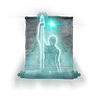 星光Starlight | 尚未核實 | 尚未核實 | 未具名變體（R2）×1 | 條件尚未核實的詞條 ×18 |
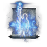 鎮定Lucidity | 尚未核實 | 尚未核實 | 未具名變體（R2）×1 | 條件尚未核實的詞條 ×18 |
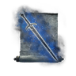 無形刀刃Unseen Blade | 尚未核實 | 尚未核實 | 未具名變體（R2）×1 | 條件尚未核實的詞條 ×18 |
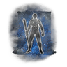 化為無形Unseen Form | 尚未核實 | 尚未核實 | 未具名變體（R2）×1 | 條件尚未核實的詞條 ×18 |
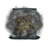 菲雅煙霧Fia's Mist | 尚未核實 | 尚未核實 | 未具名變體（R2）×1 | 條件尚未核實的詞條 ×18 |
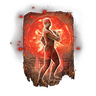 火焰的療癒啊Flame, Cleanse Me | 尚未核實 | 尚未核實 | 未具名變體（R2）×1 | 條件尚未核實的詞條 ×18 |
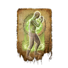 療癒毒性Cure Poison | 尚未核實 | 尚未核實 | 未具名變體（R2）×1 | 條件尚未核實的詞條 ×18 |
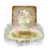 王之療癒Lord's Aid | 尚未核實 | 尚未核實 | 未具名變體（R2）×1 | 條件尚未核實的詞條 ×18 |
| 刺客步法Assassin's Approach | 尚未核實 | 尚未核實 | 未具名變體（R2）×1 | 條件尚未核實的詞條 ×18 |
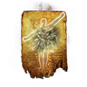 聖律療癒Order Healing | 尚未核實 | 尚未核實 | 未具名變體（R2）×1 | 條件尚未核實的詞條 ×18 |
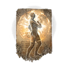 野獸健壯Bestial Constitution | 尚未核實 | 尚未核實 | 未具名變體（R2）×1 | 條件尚未核實的詞條 ×18 |
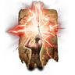 維克的龍雷Vyke's Dragonbolt | 尚未核實 | 尚未核實 | 未具名變體（R2）×1 | 條件尚未核實的詞條 ×18 |
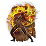 發狂擴散Inescapable Frenzy | 尚未核實 | 尚未核實 | 未具名變體（R2）×1 | 條件尚未核實的詞條 ×18 |